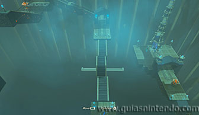

Puedes acceder a este santuario desde que llegas a la región de la torre de Picos Gemelos. Está situado al sur de la Posta de Picos Gemelos. Para encontrarlo debes seguir la bifurcación del río principal hacia el sur.
Está oculto tras unas rocas que pueden romperse con bombas. Para lograrlo puedes posarte en una roca que hay en el río y lanzar una bomba para que la corriente la acerque hasta la entrada. Cuando pase al lado hazla explotar y quedará la entrada abierta. Después simplemente nada hasta la cueva y podrás entrar en él.
La forma de completar este santuario es usando las capacidades de control de movimiento del que dispones en los mandos de control. Cada vez que examinas el extraño mecanismo que hay en el camino verás que moviendo el mando de control (sea el que sea, Mando Pro, Joy-Con, GamePad en Wii U) se moverá una plataforma reproduciendo los movimientos que tú estés haciendo simultáneamente. En el primer puzle, si giras el mando hasta ponerlo bocabajo, completarás el camino dejando a la vista un cofre que podrás abrir (con un Escudo del vigilante). Ten cuidado al girarlo de no moverlo hacia los lados o la plataforma quedará torcida.
En el siguiente puzle debes mover el mando de control de tal manera que las escaleras queden en línea recta frente a ti, pero además, debes inclinar el mando a la izquierda para que las escaleras que no están centradas se deslicen hacia ese lado y quede alineada a las otras dos.

Por último encuentras un bloque mucho más extraño. Aquí, antes de hacer un puente para pasar, debes abrir un cofre que está oculto entre sus recovecos. Gira el mando hasta conseguir que el bloque quede como se ve en la siguiente foto. Así podrás subir la rampa y llegar al cofre y regresar de nuevo al mecanismo por la misma rampa que has subido. El objetivo de abrir este cofre es conseguir la llave de la puerta final. Si no lo abres, no podrás acceder al altar del santuario.

Una vez que tengas la llave del santuario en tu poder, mueve de muevo el mando y colócalo como se ve en la siguiente foto. De nuevo tendrás que inclinar a un lado el mando para lograr que las escaleras se deslicen al lugar correcto. Después recorre el bloque hasta la puerta de salida.

Si tienes la llave del cofre, podrás abrir la puerta de salida y llegar al altar del santuario. Podrás examinarlo para obtener un símbolo de valía.